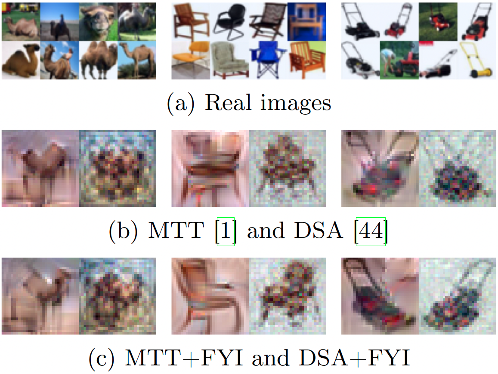
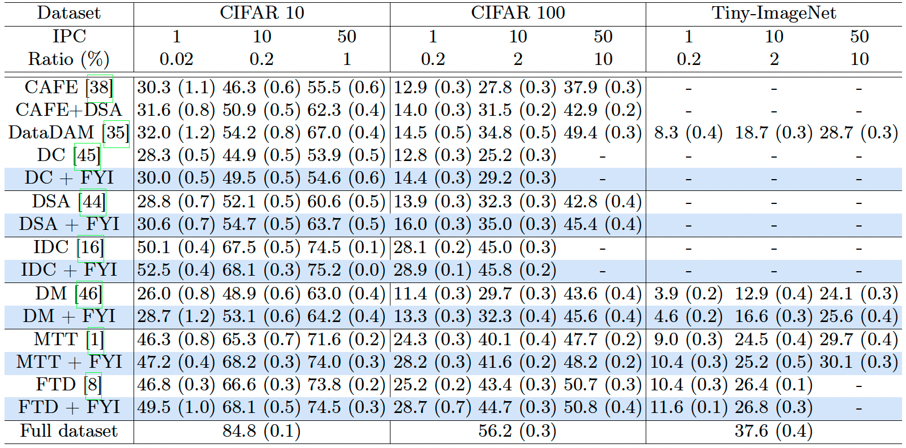

Comparisons of existing dataset distillation methods and our approach with the 1 IPC setting on CIFAR-100: Camel, chair, and lawn mower classes. (a) Objects in natural images are oriented diversely, and (b) current dataset distillation methods ((left) MTT and (right) DSA) synthesize symmetric images with repeated patterns in the left and right halves, neglecting fine-grained details of objects. (c) Applying FYI to MTT and DSA avoids this problem, while capturing the fine-grained details.
Abstract
Dataset distillation synthesizes a small set of images from a large-scale real dataset such that synthetic and real images share similar behavioral properties (e.g, distributions of gradients or features) during a training process. Through extensive analyses on current methods and real datasets, together with empirical observations, we provide in this paper two important things to share for dataset distillation. First, object parts that appear on one side of a real image are highly likely to appear on the opposite side of another image within a dataset, which we call the bilateral equivalence. Second, the bilateral equivalence enforces synthetic images to duplicate discriminative parts of objects on both the left and right sides of the images, limiting the recognition of subtle differences between objects. To address this problem, we introduce a surprisingly simple yet effective technique for dataset distillation, dubbed FYI, that enables distilling rich semantics of real images into synthetic ones. To this end, FYI embeds a horizontal flipping technique into distillation processes, mitigating the influence of the bilateral equivalence, while capturing more details of objects. Experiments on CIFAR-10/100, Tiny-ImageNet, and ImageNet demonstrate that FYI can be seamlessly integrated into several state-of-the-art methods, without modifying training objectives and network architectures, and it improves the performance remarkably.
Results

Quantitative comparison on the test set of CIFAR-10/100 and the validation split of Tiny-ImageNet. We report the average top-1 accuracy (%) with standard deviations.
We compare in this table results of state-of-the-art methods on CIFAR-10/100 and Tiny-ImageNet with varying numbers of synthetic images. From this table, we have three findings: (1) FYI gives remarkable gains over DC, DM, and MTT consistently. This demonstrates that FYI can be easily applied to different types of training objectives (\ie, distribution, gradient, and trajectory matching) to improve the distillation performance. (2) All methods using FYI provide better results, especially in challenging scenarios (e.g., 1 IPC). This suggests that the problem caused by the bilateral equivalence becomes severe, as the number of synthetic images becomes smaller. Our FYI mitigates the problem effectively, achieving the accuracy gains of 2.7%, 3.5%, and 1.2% over FTD for the 1 IPC case on CIFAR-10, CIFAR-100 and Tiny-ImageNet, respectively. (3) FYI brings large improvements over DSA and IDC. This shows that FYI improves the performance of dataset distillation in a complementary manner to existing methods using data augmentation techniques. DSA applies the same data augmentation technique (e.g., rotate 10 degrees) to real and synthetic images before feeding them into networks. IDC enlarges the number of synthetic images by resizing low-resolution images, keeping the total storage budget. For example, IDC synthesizes 40 images for the 10 IPC setting but stores the same number of pixels as 10 real images. While FYI also exploits a data augmentation technique (i.e., horizontal flipping), it mitigates a different problem caused by the bilateral equivalence. Note that both DSA and IDC suffer from this problem, and FYI further improves the performance consistently.
Paper
|
|
|
|
B. Son, Y. Oh, D. Baek and B. Ham
FYI: Flip Your Images for Dataset Distillation
In Proceedings of European Conference on Computer Vision (ECCV) , 2024
[arXiv][Code]
|
Acknowledgements
This work was partly supported by the NRF and IITP grants funded by the Korea government (MSIT) (No.2023R1A2C2004306, No.RS-2022-00143524, Development of Fundamental Technology and Integrated Solution for Next-Generation Automatic Artificial Intelligence System, No.2022-0-00124, Development of Artificial Intelligence Technology for Self-Improving Competency-Aware Learning Capabilities), and the Yonsei Signature Research Cluster Program of 2024 (2024-22-0161).